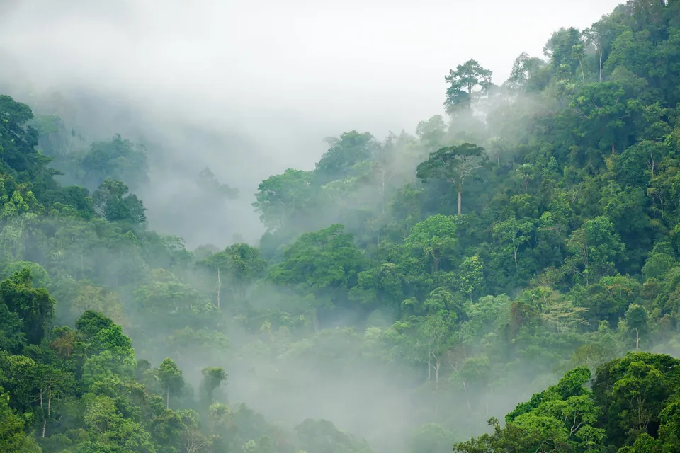
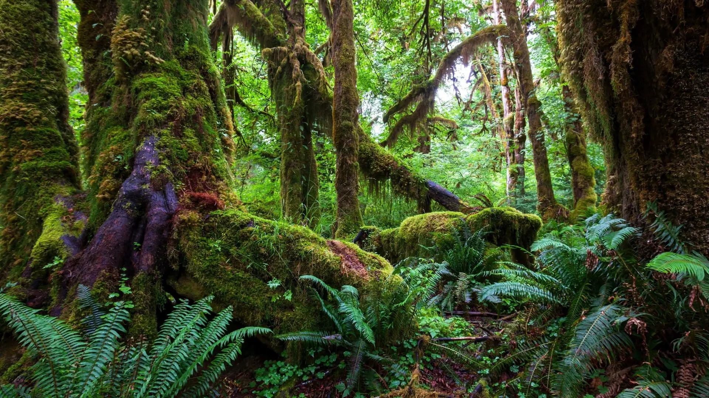
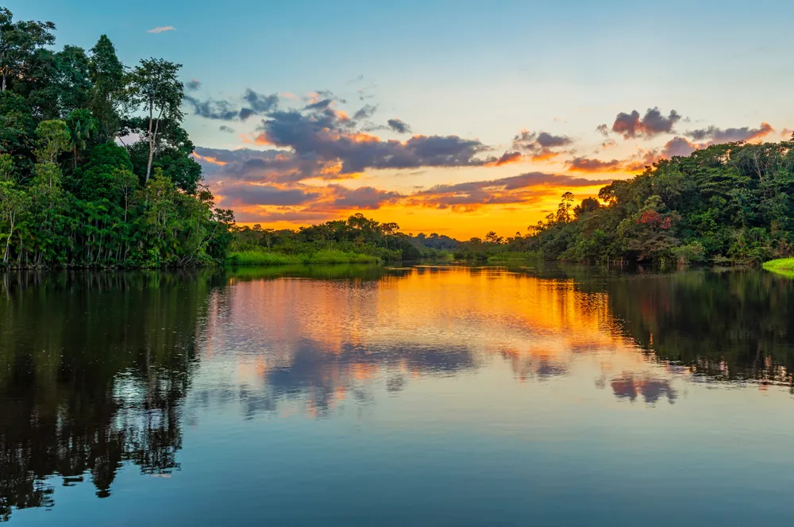

Esőerdők élővilága
Jaguárok, tukánok, óriásfák és orchideák: ismerd meg az esőerdő különleges állatait és növényeit.
Ismerd meg az esőerdőket, és segíts nekik

Az esőerdő sűrű, örökzöld erdő, ahol egész évben bőven esik az eső. A legtöbb a trópusokon, az Egyenlítő mentén nő, de hűvösebb, mérsékelt övi esőerdők is léteznek, például Észak-Amerika nyugati partvidékén.
Ezek az erdők szabályozzák a csapadékot, hatalmas mennyiségű szenet tárolnak, és élőlények millióinak adnak otthont.
Görgess lefelé, és ereszkedj le a 60 méteres óriásfák csúcsáról az erdő talajáig. Minél lejjebb érsz, annál kevesebb a fény és annál nagyobb a pára.
40–60 m
A lombkorona fölé magasodó fák csúcsait tűző nap, erős szél és nagy hőingadozás éri. Egyes óriások, például a kapokfa, a 60 métert is túlnőhetik.
20–40 m
Összefüggő zöld tető, amely felfogja a napfény és az eső nagy részét. Itt él az esőerdei állatok többsége, sokan közülük szinte sosem ereszkednek le a talajra.
5–20 m
Félhomályos, fülledt világ: a napfénynek csak kb. 5%-a jut le idáig. A növények óriási levelekkel próbálják elkapni a kevés fényt.
0–5 m
A legsötétebb szint: a napfénynek mindössze kb. 2%-a ér le ide. A lehulló leveleket a gombák és a rovarok gyorsan lebontják, a fák pedig azonnal felveszik belőlük a tápanyagot.

Jaguárok, tukánok, óriásfák és orchideák: ismerd meg az esőerdő különleges állatait és növényeit.

Fekete és fehér vizű folyók, elárasztott erdők, valamint piráják, arapaimák és elektromos angolnák az Amazonas vidékén.
Az esőerdőket leginkább azért vágják ki és égetik fel, hogy a helyükön marhalegelőt, szója- vagy olajpálma-ültetvényt alakítsanak ki. A fakitermelés, a bányászat, az utak építése és az egyre gyakoribb tüzek is pusztítják őket.
Ahol eltűnik az erdő, ott eltűnnek az ott élő állatok és növények is, a fákban tárolt szén pedig a légkörbe kerül, és tovább melegíti a bolygót.
2025-ben 4,3 millió hektár trópusi őserdő tűnt el.
Ez percenként több mint 11 futballpályányi erdő, egyetlen év alatt Magyarország területének csaknem fele.
Forrás: Global Forest Watch (új lapon nyílik)Fa- és papírtermékeknél keresd az FSC-jelölést, kávénál, kakaónál és banánnál a Rainforest Alliance zöld békás logóját. Ahol lehet, használj újrapapírt.
Sok édességben, kekszben és kozmetikumban van pálmaolaj. Olvasd el a címkét, és a fenntartható, RSPO-tanúsított változatot válaszd.
Az Amazonas vidékén az erdőirtás legfőbb oka a marhalegelők terjeszkedése. Ha ritkábban kerül marhahús a tányérodra, kevesebb erdőre van szükség.
Beszélj a barátaidnak és a családodnak az esőerdőkről. Minél többen ismerik őket, annál többen tesznek a megóvásukért.
A WWF Magyarország évtizedek óta dolgozik az erdők és az élővilág védelméért. Adománnyal vagy önkéntesként te is beszállhatsz a munkájukba.